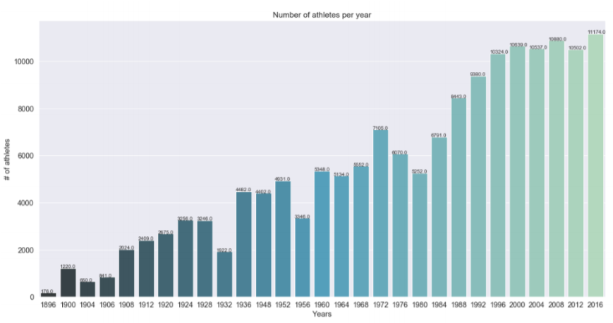

I'm Sai Srikrishna Teja Gudimetta
I am a skilled developer and technology drives me crazy.

I am a skilled developer and technology drives me crazy.
In this project, I have worked on 120 years of Olympic History dataset.
Specifically, on athlete_events.csv file from kaggle repository (
https://www.kaggle.com/heesoo37/120-years-of-olympic-history-athletes-and-results). The file athlete_events.csv contains 271.116 rows and 15 columns.
This dataset begins with the 1896 Athens, Greece Olympics, and runs up to the 2016 Rio, Brazil Olympic Games. Each row corresponds to an athlete competing
in an individual Olympic event. The columns of the data-set are:
ID - Unique number for each athlete
Name - Athlete's name
Sex - M or F
Age - Integer
Height - In centimeters
Weight - In kilograms
Team - Team name
NOC - National Olympic Committee 3-letter code
Games - Year and season
Year - Integer
Season - Summer or Winter
City - Host city
Sport - Sport
Event - Event
Medal - Gold, Silver, Bronze, or NA
Few interesting insights were found out from the dataset.

Bar chat showing the number of participants annually.

Bar chat with tallest athletes in the history of Olympics.